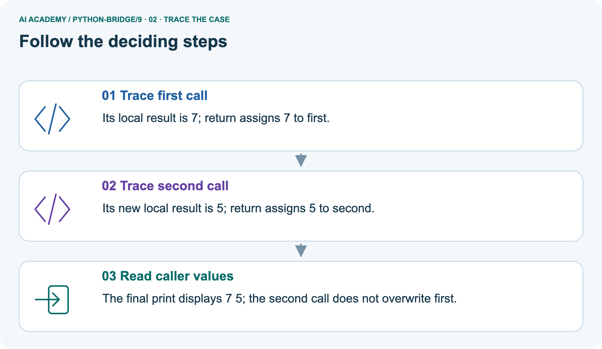
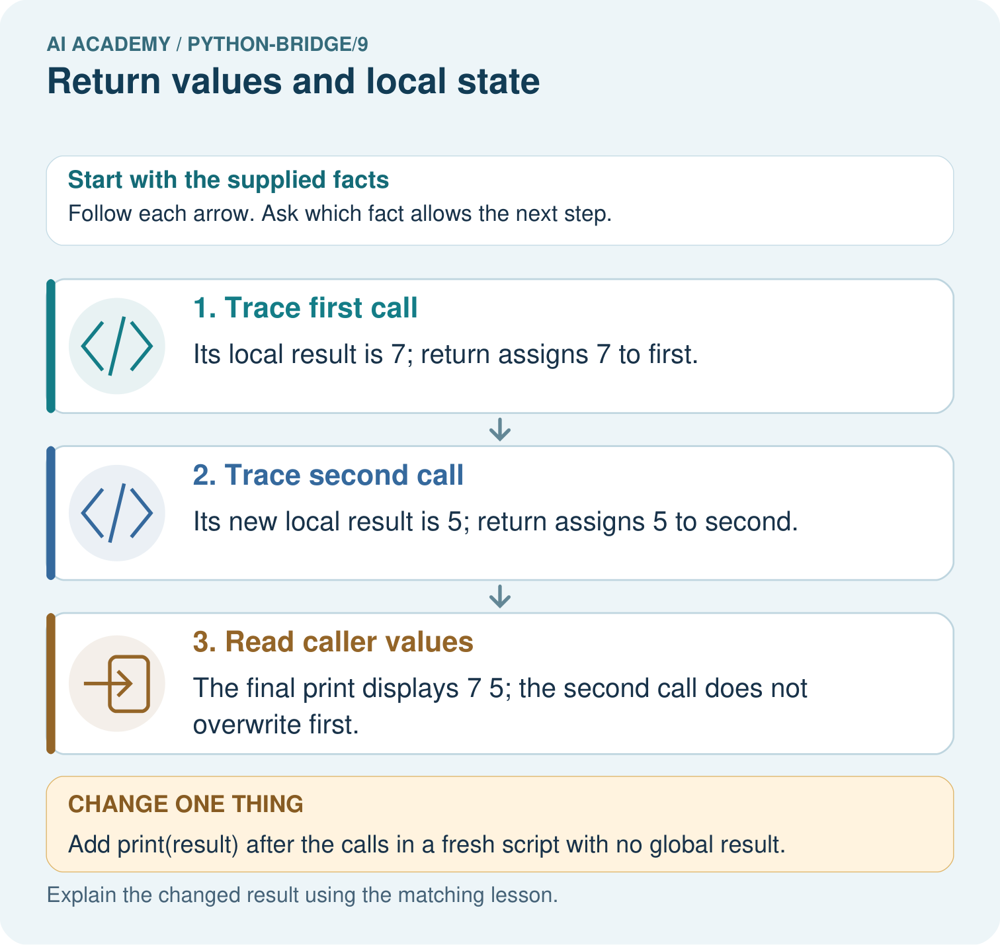
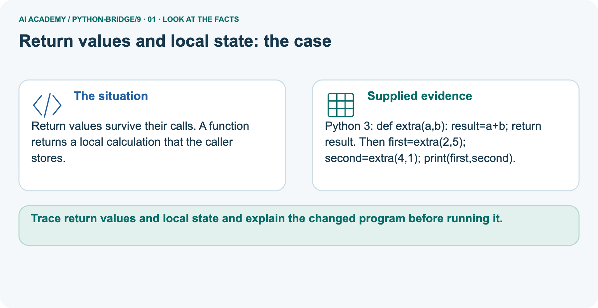
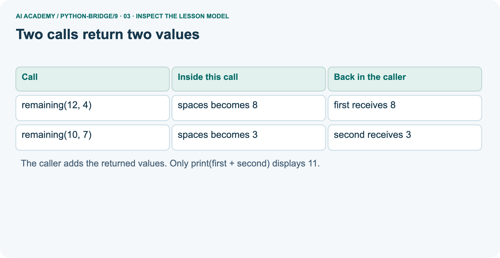
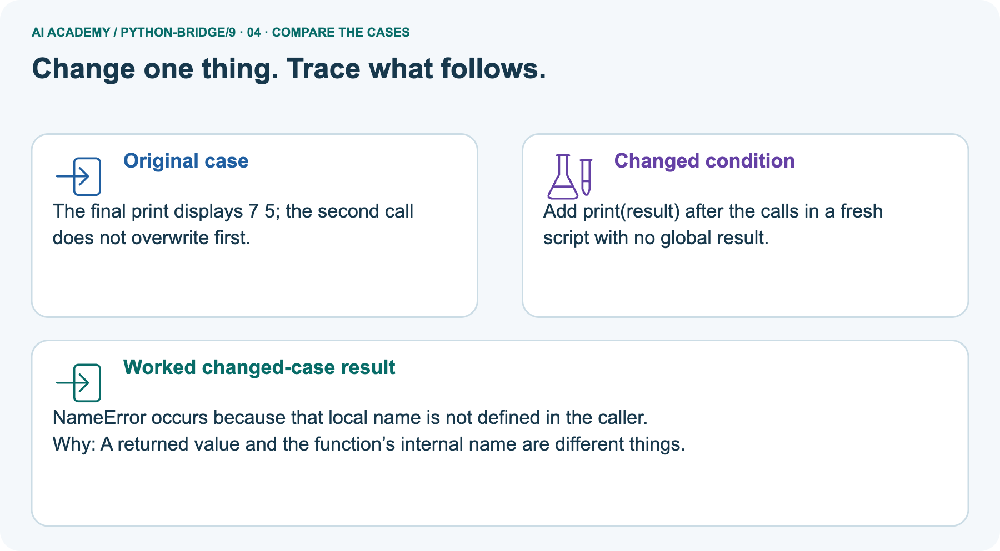
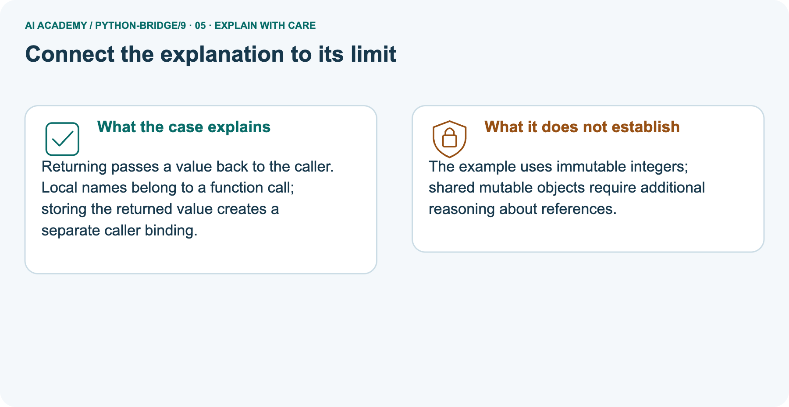
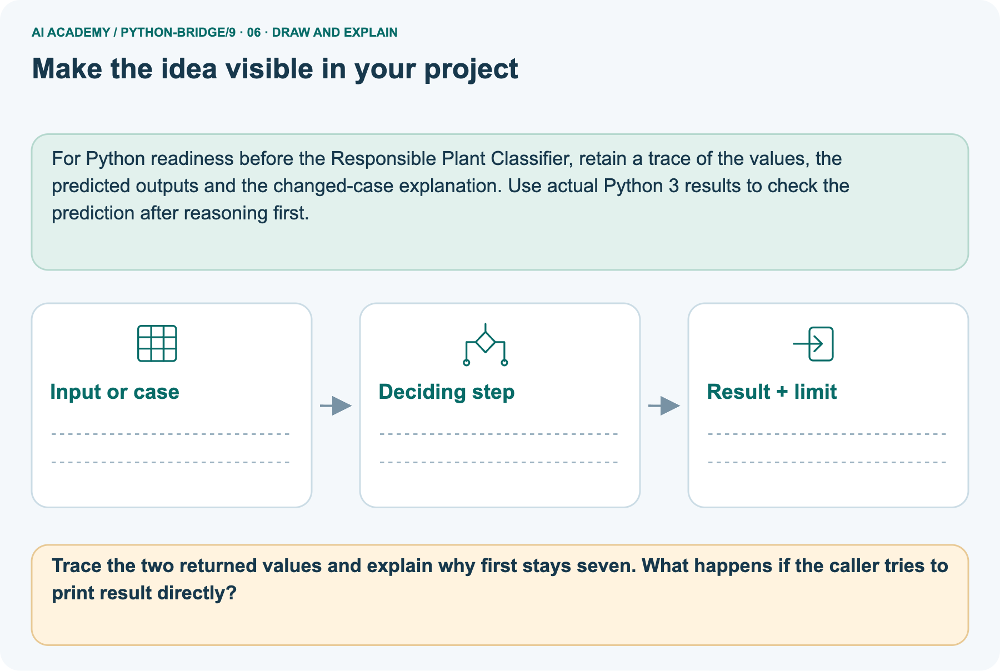

AI Academy · Python readiness bridge · Teacher guide
Return values and local state
Learn to understand, design, build, test and explain AI systems responsibly.
Project: Python readiness portfolio
THE CONNECTED WEEK
Teach return as value flow and a control-flow event.
Supply complete calls, preserve partial output and isolate fresh-scope errors from missing-return errors.
Keep one habit: Ask which statement returns, which assignment stores and which print actually runs.
Main lesson · Section 1
Prepare the connected bridge lesson
Check prior exposure and keep execution practice distinct from paper reasoning.
Goal and main plan
Primary target: Use a returned value in a later calculation
| Session | Sequence and minutes | Resources |
|---|---|---|
| Session 1 · Understand · 45 min | 0–7: recall and prerequisite; 7–15: inspect the concrete case and predict; 15–30: teacher models the worked trace; 30–40: learners explain a step using the text and visual; 40–45: check the core idea. | Sections 1–6; record the brief recall in the workbook. |
| Session 2 · Practise · 45 min | 0–5: retrieve the procedure; 5–15: W2 completion practice; 15–23: explain and check with a partner; 23–30: each learner answers the misconception check; 30–40: targeted reteaching or a harder variation; 40–45: prepare the investigation. | Sections 7–10; use the matching workbook W2 and misconception check. |
| Session 3 · Investigate and transfer · 45 min | 0–5: retrieve the decision rule; 5–20: investigate or trace; 20–30: start the independent case; 30–38: connect the project; 38–43: act on feedback; 43–45: plan the return check. | Use “Run the investigation”, “Connect your project”, “Show what you know”, “Study a complete case” and “Try a new case independently”. Give extra time for the full task set. If this week has a coding lab, use its named section; section numbers can change when extra explanations are included. |
This is a starting allocation of 135 minutes, not a validated duration. Preserve all named topics. Schedule extra time for connected examples, the full investigation, independent cases and project building.
Repeated copies of a case share one recorded attempt; they are not new evidence.
Retrieval answer guidance
Retrieval and prerequisite guidance
Without opening the old lesson, explain one key idea from Functions and arguments. Give an example and a mistake that the idea helps you avoid.
Look for: Distinguish a function definition from a function call
Reference example, not the only acceptable wording: Name show_remaining; parameters capacity and used. Arguments 15 and 6 match capacity = 15 and used = 6. Expected printed result 9.
Loops and trace tables
Without opening the old lesson, explain one key idea from Loops and trace tables. Give an example and a mistake that the idea helps you avoid.
Look for: Trace variable values before and after each loop iteration
Reference example, not the only acceptable wording: 2, 3 and 4; the stop value is excluded. The body runs three times.
Expressions and operator order
Without opening the old lesson, explain one key idea from Expressions and operator order. Give an example and a mistake that the idea helps you avoid.
Look for: Evaluate numeric expressions using Python’s grouping rules
Reference example, not the only acceptable wording: 3 * 8 + 2 or (3 * 8) + 2 gives 26. 3 * (8 + 2) gives 30 and adds two to each of three packs, not two once.
Use integer inputs, explicit return and simple local assignments. Avoid global variables, mutable defaults and shared objects in this introduction.
Python reference: https://docs.python.org/3/tutorial/controlflow.html#defining-functions. A call has its own local names; return sends a value to the caller. Examples assume valid counts and do not validate them.
Materials and readiness
Python 3 editor and returns.py
Separate paper spaces for each call and the caller
Expected return value and observed return value table
The call prints 5. The definition alone creates the function without running its body.
End goal
Trace return values and local state and explain the changed program before running it.
Earlier wording, alternatives and picture transcripts
Teach the learning cycle
Functions and arguments
Outcomes
Use a returned value in a later calculation
Trace local variables separately for each function call
Detect a missing return and test repeated calls
Preparation
Prerequisite answer
End goal for the pictorial case
This added worked case illustrates the week’s main idea. Retain all original and connected topics; schedule its practice within the teaching cycle.
Main lesson · Section 2
Teach data return and control flow without conflating print
Use fresh scripts so old globals cannot mask the scope error.
Read the caller task and assumptions
Two fictional cupboards have spare spaces. We want to add their spare spaces without copying numbers from the screen. Last week a function printed each answer.
This week a function returns its answer so the calling code can store it, combine it or choose to print it.
Assume nonnegative integer counts and used no greater than capacity. This calculation does not validate those assumptions.
Work in a Python script so a call does not automatically display its return value as it might in an interactive console.
return spaces ends the current function call and sends the value of spaces back. The assignment first = remaining(12, 4) waits for that value and stores 8. The next call stores 3 in second. Neither call prints.
The final statement prints 11. A statement after an executed return in the same call is not reached.
| Execution event | Returned value | Caller binding / displayed output |
|---|---|---|
| remaining(12,4) computes local spaces | 8 | Assignment binds first=8; no output |
| remaining(10,7) computes its own spaces | 3 | Assignment binds second=3; first still 8 |
| print(first+second) | No new function result needed | Display 11 |
| Remove outer print only | Return values still stored | No output from this script |
Trace main local/caller state
| Point in execution | Local spaces | Caller values |
|---|---|---|
| First call before return | 8 | first not assigned yet |
| Second call before return | 3 | first is still 8 |
| After both calls | Not accessible by this local name | first is 8 and second is 3 |
capacity, used and spaces belong to the current call. The second call gets new parameter values and calculates its own spaces; it does not overwrite first.
In a fresh script with no outside variable called spaces, adding print(spaces) after the calls raises NameError. Use the returned value stored in first or second instead.
Read the separate extra-call pair
Return values survive their calls. A function returns a local calculation that the caller stores.
Python 3: def extra(a,b): result=a+b; return result. Then first=extra(2,5); second=extra(4,1); print(first,second).
Keep the scripts separate. Main remaining returns 8 and 3 to first/second, then prints 11. The pictured extra returns 7 and 5, then prints 7 5. W2 stores remaining results 5,0,5 in a/b/c. Each script starts from its own complete definition and calls. In the picture return passes 7 back; the caller’s first=extra(...) assignment binds first. A later local result does not overwrite that stored integer.
This lesson uses immutable numbers; shared mutable objects need separate reference reasoning.
Trace returned values and assignments



Read the picture one step at a time
Returning passes a value back to the caller. Local names belong to a function call; storing the returned value creates a separate caller binding.
def extra(a, b):
result = a + b
return result
first = extra(2, 5)
second = extra(4, 1)
print(first, second)
Predict inaccessible local result
Change: Add print(result) after the calls in a fresh script with no global result.
Prediction: NameError occurs because that local name is not defined in the caller.
Reason: A returned value and the function’s internal name are different things.
State immutable-value scope limits
The example uses immutable integers; shared mutable objects require additional reasoning about references.
Cover the result. Ask learners to name the inputs and predict the next step. Uncover one step, connect the icon to the actual procedure, and explain its evidence. Then change the supplied condition and compare.
The picture is a representation; it does not document execution of a real AI model.
Additional guided key
first stores 0, second stores 9, and the final print displays 9. Removing only that print leaves the calculations and stored values but no displayed output.
Exit: assign answer = remaining(12, 4), then print(answer) and check it is 8 rather than None. Repeat with (10, 7), expecting 3. Passing two tests does not establish all-input correctness or verify the input assumptions.
Earlier wording, alternatives and picture transcripts
| Term | Meaning |
|---|---|
| Return value | A value a function sends back to its caller |
| Caller | The code that calls a function |
| Local variable | A name assigned inside a function and used in that function call |
| Scope | The region of code in which a name can be looked up |
| None | A Python value representing no result value in this lesson |
Two calls return two values
Model the reasoning aloud
Use the complete worked example below before asking learners to complete W2. Reveal a small part, invite a prediction, then explain the deciding step.
These teacher notes contain solutions; do not reveal the independent case answer during modelling.
| Thinking move | Teacher prompt |
|---|---|
| Plan | What is given? What is the question? Which procedure fits these facts? |
| Do | Point to each input and intermediate step in the worked trace. Name the rule that allows the next step. |
| Check | Does the output answer the question? Which assumption or limitation prevents a larger claim? |
Use the diagram and verbal explanation together. Ask learners to match a sentence to a specific visual step; do not assign learners fixed visual or auditory learning styles.
A pictorial worked case: Return values and local state
The facts we will use



Why this result follows
What this example does not establish
Change one thing in the pictured case
Ask while showing the picture
Main lesson · Section 3
Guide the trace, then fade the help
Collect predictions before execution or feedback.
Main completion task and key
Completion task: Using the correct definition, store a = remaining(8, 3), b = remaining(8, 8), c = remaining(8, 3). State a, b and c. In a fresh script, explain why print(spaces) outside the function fails.
Teacher check: a is 5, b is 0, c is 5. Each call has its own local spaces. That name has not been defined outside the function, so print(spaces) there raises NameError. Print a, b or c to use the saved results.
Start by identifying the given inputs together. Leave the intermediate steps blank. If needed, model one step, then withdraw that help on the next step. Move to a full trace only when the partial trace is understood.
For partners, alternate explainer and checker; collect a response from every learner before discussion.
Individual misconception check
Use the worked case for Return values and local state. Proposed explanation: “Printing a value returns that value”. Decide whether this explanation is supported.
Point to the step or supplied fact that decides; explain your repair if needed.
Expected correction: print displays a value. Without an explicit return, these functions return None.
Collect explanations, not only yes/no votes. If a misunderstanding is common, re-model the relevant step for the class.
If it affects a few learners, give a short targeted group explanation while others solve a more demanding variation.
Pictorial question and changed-case key
Trace the two returned values and explain why first stays seven. What happens if the caller tries to print result directly?
The returns are 7 and 5, stored independently as first and second. result is local to each call; accessing it outside in this fresh script raises NameError.
Changed-case reasoning: NameError occurs because that local name is not defined in the caller. A returned value and the function’s internal name are different things.
Collect each learner’s explanation before discussion. Use the first missing connection between input, deciding step and result to choose support. This question is worked-case practice, not fresh mastery evidence.
Support and alternative plan
| Time or stage | Teacher action |
|---|---|
| Session 1 start to 7 minutes | Retrieve the Week 8 distinction between definition and call. |
| 7 to 20 minutes | Trace the worked example and move returned-value cards to first and second. |
| 20 to 33 minutes | Complete W1 and trace local names separately for W2. |
| 33 to 45 minutes | Predict the guided case, run it and explain why assignments do not print. |
| Session 2 start to 8 minutes | Recall where the caller stores a return value. |
| 8 to 20 minutes | Run the printing bug, record None and repair it for W3. |
| 20 to 35 minutes | Collect independent W4 code and predictions before offering hints. |
| 35 to 45 minutes | Use W5 and the exit to check return control flow and test evidence. |
Use the worked example in Sections 3 and 6. Collect a prediction before revealing its result; ask the learner to point to each intermediate fact.
Use separate boxes on paper labelled caller and current call. Move the value card at return, not the local name. Offer the definition header as a hint and record it.
Extension: set spaces = 100 outside the correct worked function, call remaining(9, 4), then print the returned result and outside spaces separately. Expect 5 and 100.
Explain why the two assignments use different scopes; do not generalize this to mutation of shared objects.
Earlier wording, alternatives and picture transcripts
Compact alternative: this two-session sequence covers selected core tasks. Use the three-session weekly plan for the full lesson, independent transfer, feedback and project work; allow extra time for extensions.
Reduce help deliberately
Individual reasoning check
Pictorial practice question
Reasoned teacher answer
Main lesson · Section 4
Run the complete supplied investigation
Preserve expected, observed and paper-trace records.
Supplied case materials and checked guidance
W2 a/b/c=5/0/5; outside spaces raises NameError after existing output. Faulty remaining prints 8 then answer None; answer+1 raises TypeError; replacing internal print with return repairs the stored value. Pictured outputs 7 5 then outside result NameError. Selected twice calls return 6 and 10, sum 16, output 6 10 16; remove return and None+None raises TypeError before final print displays any line.
Outside total is local-only and raises NameError in the shown fresh program. Record tests separately.
Diagnose misconceptions
Printing a value returns that value: print displays a value. Without an explicit return, these functions return None.
A second call overwrites the first saved answer: These integer results are stored separately in the caller. A later call creates new local bindings.
A local name is available anywhere: spaces is assigned inside remaining. In our fresh script it cannot be looked up outside that function.
Zero means the function returned nothing: Zero is a number and supports arithmetic. None is a different value.
Use Section 9 for the evidence ledger. Add a boundary or missing-input case and record the expected response before checking. More successful repeats of one case do not establish wider coverage.
Choose accessible support
| What the response shows | Next teaching action |
|---|---|
| Missing or misread facts | Read the case aloud, mark supplied versus unknown facts, and let the learner restate it. |
| Wrong procedure | Return to the deciding step in the worked case. Contrast it with the proposed incorrect explanation. |
| Arithmetic or implementation error | Trace intermediate values or lines; preserve the first mismatch and retry that step. |
| Correct result without a reason | Ask for a trace and a changed case before marking independent understanding. |
| An unsupported wider claim | Ask which supplied evidence supports the claim and which further observation would be needed. |
Offer an oral explanation, drawing, enlarged visual or fewer examples when that removes a reading/writing barrier. Keep the same reasoning goal.
Stretch secure learners by changing a boundary or assumption and asking them to defend the effect, not simply by assigning more of the same questions.
Earlier wording, alternatives and picture transcripts
Match the support to the first error
Main lesson · Section 5
Assess the selected bridge transfer task
If a learner has seen this exact case, use a fresh parallel input and record exposure/support.
Selected independent task and checked key
Selected case: Trace both calls and the final expression. If return total is removed from the function, does this final print complete? Would a separate print(total) outside the function have access to its local variable?
def twice(n):
total = 2 * n
return total
first = twice(3)
second = twice(5)
print(first, second, first + second)
With the return: first=6, second=10, sum16, so output is6 10 16. Removing the return makes both calls return None; evaluating first+second raises TypeError before print runs, so no line is printed.
In this shown program total is local, so an outside print(total) raises NameError. Each call has its own local computation.
Judge trace and support
| Dimension | Evidence required |
|---|---|
| Explanation | Names the applicable idea or procedure and ties it to the supplied facts. |
| Trace and result | Preserves the given inputs and shows the relevant intermediate steps; distinguishes a prediction from an observed execution. |
| Limits | States the assumptions, missing evidence or conditions under which the result would change. |
Record each dimension as not yet, with support, or independent. Accept a valid alternative procedure with a defensible trace.
Do not penalise an honestly recorded model failure if the learner correctly explains its evidence and limits.
Give one repair action
Name the earliest unsupported step and give one action to repair it. Have the learner make that repair now and explain why. Then assess the relevant skill on a fresh, fully specified case.
Confirm it was not previously practised with feedback; solve and check the new case before assigning it. A follow-up design prompt is a starting brief, not automatically an equivalent test.
W1 Separate returning from displaying
Using the correct worked definition, execute result = remaining(15, 6), then doubled = result * 2. State both stored values and what the script displays before a print statement is added.
result is 9 and doubled is 18. Nothing is displayed by these assignments or the returning function. print(doubled) would display 18.
W2 Trace separate calls
Using the correct definition, store a = remaining(8, 3), b = remaining(8, 8), c = remaining(8, 3). State a, b and c. In a fresh script, explain why print(spaces) outside the function fails.
a is 5, b is 0, c is 5. Each call has its own local spaces. That name has not been defined outside the function, so print(spaces) there raises NameError. Print a, b or c to use the saved results.
W3 Repair the returned value
Use the faulty printing version with answer = remaining(11, 2). State the displayed number and the value stored in answer. Explain why print(answer + 1) fails, then repair the function and predict the repaired output.
The call displays 9 but stores None. None + 1 raises TypeError. Replace the internal print(spaces) with return spaces. The repaired call itself displays nothing; print(answer + 1) displays 10.
Rerun (12, 4) and check that the stored value is 8.
W5 Locate a statement that never runs
A function body has spaces = capacity - used, then return spaces, then print("done"), all at the same indentation. What does answer = remaining(4, 4) store and display? Explain whether the final print can run.
The call stores 0 and displays nothing. return ends this call, so the following print("done") is not reached. Zero is a valid returned value here and is different from None.
Earlier wording, alternatives and picture transcripts
Guided and exit questions
first stores 0, second stores 9, and the final print displays 9. Removing only that print leaves the calculations and stored values but no displayed output.
Exit: assign answer = remaining(12, 4), then print(answer) and check it is 8 rather than None. Repeat with (10, 7), expecting 3. Passing two tests does not establish all-input correctness or verify the input assumptions.
W1 Separate returning from displaying
W2 Trace separate calls
W3 Repair the returned value
W4 Build a reusable calculation independently
Each tray holds 5 counters. Define stock(trays, loose) to return the total using a local variable total. Assume nonnegative integer arguments. Store results for (2, 3), (0, 3) and (2, 0).
Print the sum of the first two stored results. Predict that output and all three stored values. Call (2, 3) again to check fresh state.
Define stock(trays, loose) with total = trays * 5 + loose followed by return total. Store values 13, 3 and 10. The sum of the first two is 16. The repeat returns 13. The function should not print; the caller prints 16.
W5 Locate a statement that never runs
Independent assessment and fresh retry
W4 must use both arguments, return its local total, store 13, 3, 10 and print 16 in the caller. Repeating (2, 3) must return 13.
After support use fresh retry tiles(packs, singles), with 4 tiles per pack: (3, 2), (0, 2), (3, 0) return 14, 2, 12; print the sum of the first two, 16; repeat (3, 2) to obtain 14.
Record help used and collect predictions before running.
Assess independent transfer
Selected case answer
Feedback that the learner uses
Main lesson · Section 6
Keep the portfolio, support and delayed check
Track code execution separately from a correct paper trace.
Project evidence
Add a labelled return values and local state evidence sheet to Python readiness portfolio. Show how you can use a returned value in a later calculation.
Use the supplied fictional case and keep its inputs, intermediate steps, calculation or prediction, and limitation. Connect this record to last week’s record; a matching answer without a trace is insufficient.
For Python readiness before the Responsible Plant Classifier, retain a trace of the values, the predicted outputs and the changed-case explanation. Use actual Python 3 results to check the prediction after reasoning first.
Support and selected assessment guidance
Use separate boxes on paper labelled caller and current call. Move the value card at return, not the local name. Offer the definition header as a hint and record it.
Extension: set spaces = 100 outside the correct worked function, call remaining(9, 4), then print the returned result and outside spaces separately. Expect 5 and 100.
Explain why the two assignments use different scopes; do not generalize this to mutation of shared objects.
Selected independent answer: With the return: first=6, second=10, sum16, so output is6 10 16. Removing the return makes both calls return None; evaluating first+second raises TypeError before print runs, so no line is printed. In this shown program total is local, so an outside print(total) raises NameError. Each call has its own local computation.
Keep earlier W4 transfer as additional practice; do not substitute its numbers or key for this selected task. Record prior exposure and use a fresh parallel case after support.
Delayed return
Suggested return points in this level: python-bridge/10, python-bridge/12. Use actual classroom dates, adjusting for holidays and gaps. One, three and six teaching weeks are scheduling choices, not a claimed optimal spacing.
At a delayed check, ask for the idea from memory and a changed application. Compare with the earlier independent response and record support used.
For a new level, revisit the previous capstone before checking the new prerequisites.
| Record | Teacher evidence |
|---|---|
| Learner code and date | |
| Concept and case used; prior exposure | |
| Explanation / trace / limits | |
| Support and first repair | |
| Changed case and delayed outcome | |
| Next teaching action |
Use the evidence to choose reteaching or the next step. A completed page, confidence rating or attractive project does not by itself demonstrate understanding.
Bridge to the next topic
Week 10 uses dictionaries to keep related values together as named fields in a record.
Retain the project ledger and assess a changed case after support. Check the relevant prerequisite before carrying this component forward.
Earlier wording, alternatives and picture transcripts
Plan the delayed return
Project evidence from this case
Reference bank and extra practice
Choose the reference that helps your next step.
Reference · Alternative planning checklist
Reference · Section 7
Reference · Alternative planning checklist
Use alongside the main route without repeating the teaching cycle.
Planning and assessment reference
Teaching target: Use a returned value in a later calculation
Prepare the labelled worked-case picture, the matching workbook, fictional input cards and a place for individual responses. Check a local Python 3 environment before class; have a paper-trace version ready.
| Session | Plan | Resources |
|---|---|---|
| Session 1 · Understand · 45 min | 0–7: recall and prerequisite; 7–15: inspect the concrete case and predict; 15–30: teacher models the worked trace; 30–40: learners explain a step using the text and visual; 40–45: check the core idea. | Sections 1–6; record the brief recall in the workbook. |
| Session 2 · Practise · 45 min | 0–5: retrieve the procedure; 5–15: W2 completion practice; 15–23: explain and check with a partner; 23–30: each learner answers the misconception check; 30–40: targeted reteaching or a harder variation; 40–45: prepare the investigation. | Sections 7–10; use the matching workbook W2 and misconception check. |
| Session 3 · Investigate and transfer · 45 min | 0–5: retrieve the decision rule; 5–20: investigate or trace; 20–30: start the independent case; 30–38: connect the project; 38–43: act on feedback; 43–45: plan the return check. | Use “Run the investigation”, “Connect your project”, “Show what you know”, “Study a complete case” and “Try a new case independently”. Give extra time for the full task set. If this week has a coding lab, use its named section; section numbers can change when extra explanations are included. |
Before class, solve the supported practice: Using the correct definition, store a = remaining(8, 3), b = remaining(8, 8), c = remaining(8, 3). State a, b and c.
In a fresh script, explain why print(spaces) outside the function fails.
Reasoned practice answer: a is 5, b is 0, c is 5. Each call has its own local spaces. That name has not been defined outside the function, so print(spaces) there raises NameError. Print a, b or c to use the saved results.
Check every learner before discussion: Use the worked case for Return values and local state. Proposed explanation: “Printing a value returns that value”. Decide whether this explanation is supported.
Point to the step or supplied fact that decides; explain your repair if needed.
Misconception repair: print displays a value. Without an explicit return, these functions return None.
Support: read the exact case aloud, enlarge the labelled picture, supply input cards and model only the first deciding step. Accept a spoken explanation or drawing; retain the reasoning goal.
Extension: Add print(result) after the calls in a fresh script with no global result. Require a prediction and a reason before comparing. Expected result: NameError occurs because that local name is not defined in the caller.
Reason: A returned value and the function’s internal name are different things.
Independent assessment: withhold the reserved answer until the learner has attempted the new case. Record support separately from correctness.
| Criterion | Not yet | With support | Independent |
|---|---|---|---|
| Explanation | Names an answer without a deciding fact | Uses a hint to link fact and decision | Explains the deciding fact in own words |
| Trace or test | Cannot connect input and result | Completes steps with prompts | Traces or tests a changed case accurately |
| Limits and revision | Claims more than evidence supports | Names a limit after a prompt | States a defensible limit and useful next test |
Project checkpoint: Python readiness portfolio. Keep runnable code, predictions, actual outputs, one repaired error and an explanation of a function on changed inputs.
Use the weekly teacher answer for topic-specific reasoning. A saved progress tick is an activity record; judge mastery from the learner’s explanation and evidence.
Reference · Feedback and evidence records
Reference · Section 8
Reference · Feedback and evidence records
Keep individual first attempts separate from supported rehearsal.
Feedback and repair
Use the two formative questions as supported practice, not as independent mastery scores. Discuss the deciding evidence rather than accepting a guessed selection.
The feedback comes from the reviewed public worked case. Do not reveal the separately reserved independent teacher answer until the learner has attempted that case.
Ask students to predict before running code. Preserve errors and actual outputs; collect a changed test and an explanation. The branch-boundary and indexing lessons deliberately include failure cases.
Use the earlier worked-explanation links to address a specific missing building block, then return to the current question. Adapt this suggestion after observing the learner; it is not an automatic diagnosis.
Collect the completed-work portfolio as evidence. Record support separately from correctness, and assess explanation, trace/test and limitations. Progress ticks and quiz selections alone do not establish mastery.
Reference · Teach with the six pictures
Reference · Section 9
Reference · Teach with the six pictures
Use the relevant picture for a specific reasoning move.
01. Return values and local state: the case



Return values survive their calls. A function returns a local calculation that the caller stores. Supplied facts: Python 3: def extra(a,b): result=a+b; return result.
Then first=extra(2,5); second=extra(4,1); print(first,second).
Point to the given fact that matters most. Explain why it matters.
Teacher prompt: Point to the given fact that matters most. Explain why it matters. Ask learners to describe one label or arrow in ordinary words. Use the adjacent transcript if the image is difficult to see.
02. Follow the deciding steps
Trace first call: Its local result is 7; return assigns 7 to first. → Trace second call: Its new local result is 5; return assigns 5 to second. → Read caller values: The final print displays 7 5; the second call does not overwrite first.
Point to each numbered stage and explain which recorded input it uses.
Teacher prompt: Point to each numbered stage and explain which recorded input it uses. Ask learners to describe one label or arrow in ordinary words. Use the adjacent transcript if the image is difficult to see.
03. Two calls return two values



Two calls return two values. remaining(12, 4) | spaces becomes 8 | first receives 8. remaining(10, 7) | spaces becomes 3 | second receives 3
Read the labels and values. Explain the relationship the model shows.
Teacher prompt: Read the labels and values. Explain the relationship the model shows. Ask learners to describe one label or arrow in ordinary words. Use the adjacent transcript if the image is difficult to see.
04. Change one thing. Trace what follows.



Original case: The final print displays 7 5; the second call does not overwrite first. Changed condition: Add print(result) after the calls in a fresh script with no global result.
Expected result: NameError occurs because that local name is not defined in the caller. Reason: A returned value and the function’s internal name are different things.
Predict before checking the worked changed-case result. Name what changed and what the supplied facts allow you to conclude.
Teacher prompt: Predict before checking the worked changed-case result. Name what changed and what the supplied facts allow you to conclude. Ask learners to describe one label or arrow in ordinary words.
Use the adjacent transcript if the image is difficult to see. Changed-case reasoning: A returned value and the function’s internal name are different things.
05. Connect the explanation to its limit



Returning passes a value back to the caller. Local names belong to a function call; storing the returned value creates a separate caller binding.
Limit: The example uses immutable integers; shared mutable objects require additional reasoning about references.
Explain the case, then point to a limit on the claim.
Teacher prompt: Explain the case, then point to a limit on the claim. Ask learners to describe one label or arrow in ordinary words. Use the adjacent transcript if the image is difficult to see.
Keep the stated scope: The example uses immutable integers; shared mutable objects require additional reasoning about references.
06. Make the idea visible in your project



For Python readiness before the Responsible Plant Classifier, retain a trace of the values, the predicted outputs and the changed-case explanation. Use actual Python 3 results to check the prediction after reasoning first.
Draw your input, deciding step, result and limit. Supported question: Trace the two returned values and explain why first stays seven. What happens if the caller tries to print result directly?
Draw your project trace and justify the deciding step using evidence.
Teacher prompt: Draw your project trace and justify the deciding step using evidence. Ask learners to describe one label or arrow in ordinary words. Use the adjacent transcript if the image is difficult to see.
Supported practice key: The returns are 7 and 5, stored independently as first and second. result is local to each call; accessing it outside in this fresh script raises NameError.
Earlier wording, alternatives and picture transcripts
Use one picture at a time. Hide a worked result before asking for a prediction, then reveal it for feedback. These are supported teaching cases; retain the separate independent assessment for a fresh first attempt.